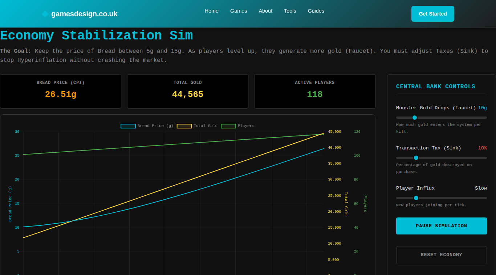
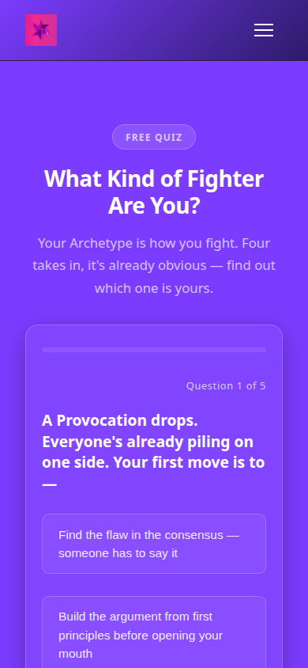
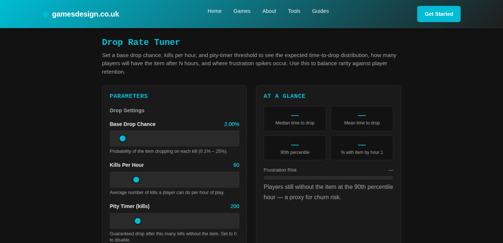
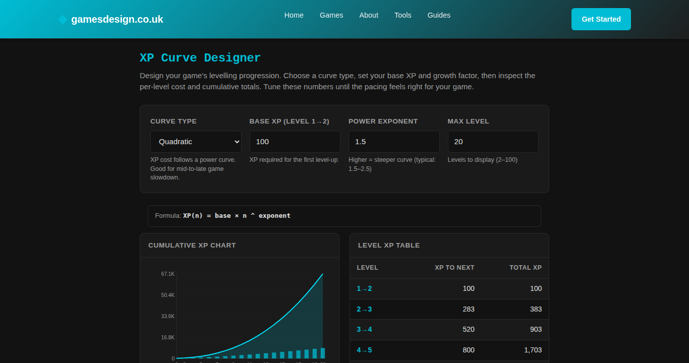

Our platform builds websites by itself, including the interactive parts — calculators, simulators, small games. No human writes that code. Which left us with an awkward question: how do you know any of it actually works? Not whether it deployed. Whether it works.
A generated tool can pass every check we had — valid HTML, a script block, nothing truncated — and still be broken. A slider wired to the wrong variable. A chart line drawn against the wrong axis. None of that shows up in the file. All of it shows up the second someone uses the page.
We watched it ship twice on the same game. The original build put two bugs in. Months later an automatic repair rebuilt the page and put the same two bugs back, faithfully. Everything passed, both times. That's when we stopped arguing about it and built this.
Different symptoms, same root. Nothing durable tied a thing to the intent behind it, or to a definition of working you could test.
An agent builds a tool and makes choices on the way. One input field instead of three. A hand-drawn chart instead of a library. Dots hidden above 25 levels because more looked like soup. Then it moves on. Weeks later a second agent tidies the tool up and undoes all of it, because nobody wrote down why any of it was that way. The argument lived in a conversation that no longer exists.
Every check we had read the stored HTML. Not one of them could see behaviour. The simulator opposite passed the lot while two bugs sat in plain sight of anyone who used it for ten seconds.
The influx slider used its own position as the rate, so “Flood” added five players a tick instead of a hundred. The numbers did move — about twenty times too weakly for anyone to notice. And the players line was drawn against the gold axis, which climbs into the tens of thousands, so two hundred players rendered as a flat line along the bottom.
Neither is visible in the file. Both are obvious in a browser.

The repair went through the loop in these pages. The tool was rebuilt from a specification that named both defects as requirements, and the result was checked against the live page rather than taken on trust. The whole argument sits in the tool's own notes now, so the next agent to touch it inherits the reasoning instead of guessing at it.
Two machine-written bugs, documented and fixed by machines.
Two documents sit in the database next to the thing they describe. Not in a wiki, not in a repo. Keyed to the tool, so they follow it around.
The PLAN says what the tool is for, how it's delivered, and which decisions were deliberate — the do-not-touch list. At the bottom is the part that earns its keep: a list of checks spelling out what working means for this tool and nothing else. Change it and the old one is kept.
The notes are just a log: every fix, every diagnosis, every dead end. Dead ends are worth as much as the wins — a note saying “it wasn't this” saves the next agent an hour.
The agent that builds the tool writes the PLAN as it builds. The ones that fix it add a note when they're done. It's the only arrangement I've seen where documentation stays true, because the thing that changes the code is the thing that writes the record.
A documentation step is never allowed to fail the work. If the PLAN write breaks, the tool still ships. Get that wrong and someone rips the docs out within a month — and they'd be right to.
# PLAN — tool-xp-curve-designer ## Deliberate decisions — do not re-fix - The growth-factor input swaps min/max/step/default per curve type: one reused field, not three — v1 kept simple by design. - Raw 2D canvas, not a charting library — no external dependencies. - Chart dots suppressed above 25 levels: a deliberate v1 threshold. ## Acceptance criteria ```criteria { "profiles": ["desktop","mobile"], "checks": [ {"id":"boots","type":"selector_exists", "selector":".tool-container"}, {"id":"console","type":"no_console_errors"}, {"id":"status","type":"page_status_ok"}, {"id":"mobile-fit","type":"no_horizontal_overflow", "profiles":["mobile"]}, {"id":"curve-switch","type":"interaction", "steps":[{"action":"select","selector":"#curveType", "value":"exponential"}], "expect":{"selector":"#tableWrap tr"}} ] } ``` ## Correction log - v1 (machine-written) asserted a table-body id the component never defines. Real: rows are rendered by script into #tableWrap.
Criteria are worthless unless something reads them. We check in tiers, cheapest first — but the cheap ones can't answer the question you actually care about.
A small service starts a real copy of Chrome — headless, which just means the same browser without a window on screen. It loads the deployed page off the live site, waits for the JavaScript to finish, then tries the thing: picks “exponential” from the dropdown, looks to see whether the table rebuilt. Desktop size, then phone size.
Nothing else here can tell you a slider works. This can.
A check might say “assert #tableWrap tr exists”. Those rows are built by JavaScript, so they're nowhere in the stored HTML — but the container #tableWrap is. So the cheap tier only checks the leftmost part, the anchor. A real-but-empty container passes and the browser settles the rest. A selector that exists nowhere fails — which is how we catch an agent that invented one.
Cheap checks can confirm. They're not allowed to refute.
A scheduled sweep notices a tool is due a check. Everything after that runs on its own, and the verdict lands back in the same document the checks came from.
Postgres, Kafka, some Go services, a browser, one model API. The only decision that matters is where the truth lives — in the database, attached to the tool, written by the agents, readable by anything that needs to know what working means.
Postgres holds the PLAN and the notes, and that's the source of truth — everything else is a copy. Kafka moves requests between the agents and the services. The chassis runs each agent's workflow: load the docs, do the job, write a note. The browser service drives Chrome and reports what it saw. Claude does the writing and the reasoning — Sonnet 5 across the tool pipeline, Opus 4.8 when a tool needs rebuilding from scratch.
Every documentation step routes its failures to “finished”, not “failed”. Writing a note can't break the build it's describing. The same goes for the photographs later: useful, never in the way.

Our first failure that wasn't staged. Three of seven checks failed. One was our own fault — the PLAN named a class this tool never had. The other was real. At phone width the page ran off the side.
Overflow is measured across the whole page, so the obvious move — blame the tool — would file an unfixable ticket against every tool on the site, forever. Instead it finds the tool's own container, names the widest offender, and says plainly whether it's the tool or the furniture around it.
It reported "fixed": true and had changed nothing in the footer — it patched the header instead, because that's what it defaults to. We only knew because the browser went back and measured the same 506 pixels. “Complete” isn't “fixed”, and nothing but a real browser can tell you which one you got.
One CSS rule, in a footer template shared by eight sites. Patching the built page would have been wiped on the next rebuild, so the fix went into the template. The next run reported mobile-fit@mobile passing.
Read top to bottom and you get the whole thing: a failure, a correction, a pass that still points at the real culprit, and finally a clean run.
--- 14 Jul 10:34 | ["acceptance-fail"] | tool-acceptance --- ## Tier-4 acceptance FAILED — tool-archetype-taster-quiz Observed: 3 of 7 evaluated checks failed in headless Chromium: boots: no element matches .tool-container in the live DOM mobile-fit: page overflows horizontally on mobile Fix: improve_tool item created carrying the criteria as acceptance_test --- 14 Jul 13:24 | ["migration"] | human --- ## PLAN superseded: real selectors + attribution Root cause: composer-invented anchor + a PLAN born before the composer was fixed. Fix: boots re-anchored to the REAL section class; quiz-flow replaced with a real interaction (click .quiz-option-btn x3 -> .result-archetype-name) VERIFIED passing in real Chromium before being written here. NOT fixed here: the page overflows on mobile — the offender is div.footer-legal (506px at 390px) in vonc's SITE FOOTER, which overflows every page on the site. That is site chrome, not this tool: routed to component-template-fixer. Blaming the tool would have sent the fixer to edit a component that cannot reach the footer. --- 14 Jul 14:06 | ["acceptance-run"] | tool-acceptance --- ## Tier-4 acceptance PASSED — tool-archetype-taster-quiz Observed: all 8 of the tool's own checks passed across profiles: desktop, mobile Root cause: site chrome, not this tool: mobile-fit@mobile — div.footer-legal (479px) in site-footer Fix: 1 responsive_fix item raised for the site template; the tool itself needs no change --- 15 Jul 15:13 | ["acceptance-run"] | tool-acceptance --- ## Tier-4 acceptance PASSED — tool-archetype-taster-quiz Observed: all 9 of the tool's own checks passed across profiles: desktop, mobile Root cause: not-applicable Fix: none required Verified: boots@desktop, status@desktop, quiz-flow@desktop, console@desktop, boots@mobile, status@mobile, mobile-fit@mobile, quiz-flow@mobile, console@mobile
It records a pass and, in the same breath, points at a defect it refuses to pin on this tool — with the element, its width, and where it lives. That's not a test result. That's a diagnosis.
Between the third entry and the fourth, one CSS rule changed in a shared template. mobile-fit@mobile moves into the verified list by itself. The checks never changed — only the page did.
That's what a regression test looks like when the spec, the test and the history are all the same document.
“Verified in real Chromium before being written here.” No check gets authored from imagination. Somebody watches it pass against the live page first. A test you've never seen pass is a guess with good posture.
A failing run photographs the whole page at each size, while the browser is still open — so the picture shows the state after whatever broke, not a fresh reload. The note gets a permanent address for it. The repair ticket gets a link you can click.
Evidence never gets a vote. No storage set up, capture failed, upload failed — that's one line in the log and the verdict is untouched. A page that never loaded doesn't get photographed either. There's nothing there worth keeping.
And expiring links stay out of the notes. Notes get fed into model prompts, and a signed URL is a few hundred characters of signature that'll be wrong by next week. The note carries the permanent address; the ticket carries the clickable one. There's a test that keeps it that way.

The photographs stored fine. Then no repair ticket turned up. That absence was a real bug: a cancelled ticket from days earlier was still holding the slot, so every new ticket for that fault was being dropped without a word. It had been quietly swallowing them. One line of index fixed it.
Looking hard at a pass is how you find what the pass was hiding.
None of this needs our platform. It's all cheap, and every bit of it came from something going wrong first.
Give memory an address. Not notes about the project — notes attached to the thing, loaded whenever an agent touches it. Context you have to remember to paste in is context you'll forget to paste in. Write down what didn't work, too. Half of what saves time later is a record of a wrong turn.
Let the builder say what done means. A test suite written in advance can't know what a generated tool was meant to do. That knowledge exists for about a minute, while the thing is being built, and then it's gone. Make the builder write it down in that minute, in a form something else can check later. Keep it where the repair agent will read it.
Check behaviour, not shape. Structure checks are free and worth having, and they cannot see a slider that does nothing. One real browser turns “it looks right” into “it did the thing”. It's also the only way you'll catch an agent claiming a fix it never made. That happened to us, and we'd never have known.
Work out whose fault it is before you file the ticket. A failure found in one place wasn't necessarily caused there. Send a repair agent at the wrong component and it'll keep trying, keep failing, and keep telling you it succeeded.
Never let the paperwork fail the work. If writing a note can break a build, the notes will be gone inside a month and nobody will admit to removing them.
And make the checks describe what you actually ship. Ours insisted the JavaScript came out as separate files, because a plan said so once. The pipeline had always put it inline. Every run failed, correctly, on a check that was simply wrong. A check that always fails just teaches everyone to ignore checks — put the ambition in a roadmap, not in a test.
The pattern underneath all six: make the machine commit to something specific, then go and look.
Tools write their own PLAN as they're built. Repair agents and the diagnosis loop write their own notes. A scheduled sweep finds tools due a check and drives them in a real browser, desktop and phone, clicking and selecting the way a person would, with nobody triggering it.
Both endings work. A pass gets recorded. A failure gets recorded and turned into a repair ticket carrying the checks that failed. And it closed a real bug end to end — a CSS rule in a template shared by eight sites — then went back and confirmed its own fix. We only chose between options.
It covers tools — the self-contained interactive things. Not every page on every site.
The checks are only as good as the agent that wrote them. Three times now one has invented an element id that was never in the tool. The anchor rule caught all three, which is rather the point, but it means the writing still needs watching.
And a genuine failure hasn't arrived with photographs yet. That part is proven on a bug we caused deliberately and then reverted. Which is honest, but it isn't the same thing.

Most of the value didn't come from tools fixing themselves. It came from making the machine write down what it believed — because then we could see it was wrong. An invented selector. A delivery mechanism that never existed. An agent reporting a fix it hadn't made. Every one of them was invisible until something had to make a claim you could go and check.
The paperwork travels with the thing. The machines that change it are the ones that write its history, which is the only setup where documentation stays true. And working isn't a paragraph anyone can read generously — it's a list of checks, run in a real browser against the real page, that either pass or don't.